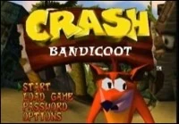
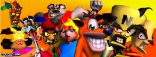
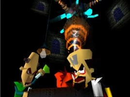

Crash Bandicoot es un juego de plataformas creado por Naughty Dog para la PlayStation, protagonizado por el personaje del mismo nombre. El juego fue lanzado en Norteamérica el 31 de agosto, en noviembre en Europa y el 6 de diciembre en Japón. El desarrollo del juego comenzó en 1996, con el personaje del título que fue diseñado por Charles Zembillas y Joe Pearson, y fue lanzado oficialmente al público en mayo de 1994 en la Electronic Entertainment Expo.
El juego se centra alrededor de Crash Bandicoot, un marsupial mutado por el doctor psicópata Neo Cortex y su mano derecha Nitrus Brio, pero Crash intenta parar los planes de su creador (la dominación del mundo), cruzando sobre cualquier contaminación que haya causado para salvar a su novia Tawna, un bandicoot femenino también mutado por el doctor Cortex y Nitrus Brio.
El juego fue originalmente lanzado para la PlayStation, también fue emulado en la PlayStation Network en 2006, con el cual puede er jugado en la PlayStation Portable de Sony y, con el Sistema Operativo actualizado en 1.70, en la Playstation 3.
La empresa desarrolladora Naughty Dog creó al personaje y sus 4 primeros videojuegos. Posteriormente, Naughty Dog perdió los derechos y Vivendi Universal es quien se ha encargado de la saga hasta el 2016, habiendo bajado en calidad de forma notable. y luego Activision obtendrian los derechos en 2016, y anunciarían que Activision y Vicarious Visions desarrollarían el N. Sane Trilogy, y lo lanzarian en 2017 para la PlayStation 4, PC, Nintendo Switch, y XBOX ONE, y Activision encargaría a Beenox de desarrollar el Remaster/Remake de Crash Team Racing, llamado Crash Team Racing Nitro Fueled. y desarrollarian en 2020 la 4ta entrega llamada Crash Bandicoot 4: It's About Time.
El Juego

Menu principal de Crash Bandicoot.
El juego tiene treinta y tres niveles normales, también contiene dos niveles secretos y seis batallas de jefe, los seis jefes son el líder de la aldea, llamado Papu Papu, el demente Ripper Roo, el musculoso Koala kong, el pistolero Pinstripe potoroo, el doctor Nitrus brio y, finalmente, el propio doctor Neo cortex. El jugador debe seguir un camino en un ambiente limitado derrotando a enemigos, evitando hoyos y rompiendo cajas, cada una contiene una distinta cantidad de fruta Wumpa. Superar un nivel rompiendo todas sus cajas sin perder ninguna vida recompensará al jugador con una gema. En las batallas de jefes, el jugador deberá evitar los ataques del personaje jefe, después de que el jefe ataque es vulnerable. Las formas de ataque de Crash son solamente saltar sobre los enemigos y girar sobre sí mismo al lado de ellos. La mayoría de los enemigos son derrotados con el ataque de salto, pero los enemigos que no son derrotados con el ataque de salto deben ser derrotados con el ataque de giro. Este movimiento también se puede utilizar para golpear a un enemigo contra otro o contra cajas. También, en algunos niveles, Crash tendrá que montar un jabalí, sobre el cual tendrá un control limitado. En niveles como éstos, el jugador debe evitar obstáculos tales como enemigos mientras que continuamente avanza hacia adelante rápidamente sobre el jabalí. En algunos niveles, el jugador es perseguido por una roca gigante, en los cuales el jugador debe correr hacia la cámara mientras esquiva hoyos y otros obstáculos.
El jugador puede recoger máscaras escondidas en cajas (Aku Aku). Cuando obtiene estas máscaras flotantes, éstas protegen al jugador de los ataques o contactos de los enemigos. Recoger tres máscaras dará al jugador invulnerabilidad temporal sobre todos los peligros de menor importancia (como enemigos o cajas de TNT). También en numerosos niveles hay símbolos escondidos en el interior de ciertas cajas. Estos símbolos tienen la cara de Tawna, el doctor Nitrus Brio o el doctor Neo Cortex. Una vez que el jugador recoja los tres símbolos de un nivel, será transportado a una ronda de bonificación (bonus round, en inglés), donde el jugador puede recoger fruta y vidas extra. Las rondas de bonificación de Tawna se pueden utilizar para guardar cualquier progreso hecho hasta el punto y las del doctor Neo Cortex te dan las dos llaves que te desbloquean dos niveles para tener todo al 100%.
Personajes

Todos los personajes de Crash Bandicoot.
Como el primer juego de la serie, el juego ofrece solamente nueve personajes. El protagonista del juego es Crash Bandicoot, un bandicoot valiente mutado por el doctor Neo Cortex, que intenta cruzar toda contaminación causada por el doctor y detenerlo en sus planes de la dominación del mundo con la ayuda de aku aku. El doctor Neo Cortex, mientras intenta terminar su última creación usando el Evolvo-Ray y el Cortex Vortex en Crash como uno de sus experimentos, nota que el experimento había ido mal y empieza perseguirlo por su castillo. Él considera que Crash es un experimento fallido debido a su inteligencia media, quien limpia la isla N. Sanity, logra detener a Cortex y salva a Tawna, otro bandicoot hembra mutado. Aku Aku es una máscara de vudú de un viejo doctor brujo. Él vigila las tres islas y ayuda a Crash en su búsqueda para derrotar al Dr. Cortex y cruzar sobre la basura tóxica que ha creado.
Historia

Cortex (derecha) y Brio (izquierda) pusieron a Crash bajo el Evolvo-Ray
El Doctor Neo Cortex es un científico malvado, propietario de las tres islas más bellas de Australia y el enemigo principal del juego. Él ha mutado a todos los animales de las islas, convirtiéndolos en bestias antropomorfas, que espera utilizar para formar un ejército y dominar el mundo. El doctor Nitrus Brio es un científico loco, la mano derecha del doctor Cortex y el creador del Evolvo-Ray 2, sin embargo por su carencia de ambición, él deja al doctor Cortex tomar posesión de su creación. Cortex decide crear a un Bandicoot para liderar su ejército, pero algo sale mal con el Cortex Vortex y el pobre Crash es perseguido por toda la habitación. Crash acaba cayendo por la ventana del castillo por accidente y al día siguiente no despierta en una playa; N.Gin, mano derecha de Neo Cortex, relata en algún momento de los posteriores juegos, que Neo le ordenó buscar al marsupial y matarlo; N. Gin lo halló y trató de matarlo con un cohete que Crash manipuló y adhirió a su cabeza. N. Gin debió ser operado con urgencia por Cortex, quien volvió de metal la mitad de su cabeza. Crash se había enamorado de una bandicoot hembra llamada Tawna, así que decide recorrer las islas para rescatarla y derrotar al Doctor Cortex.